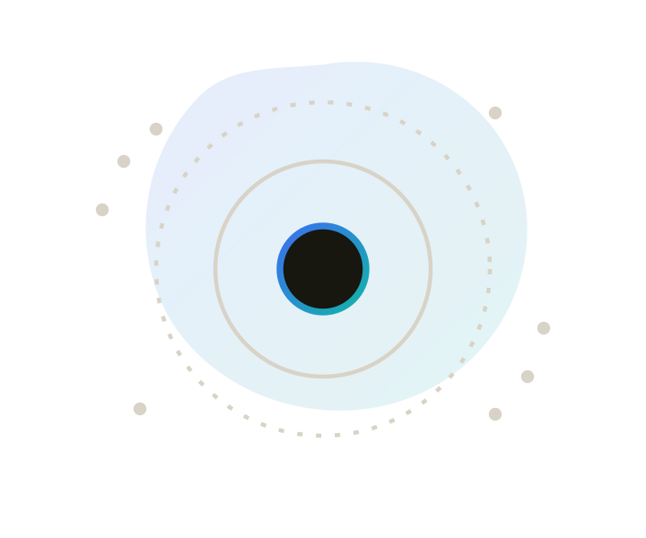
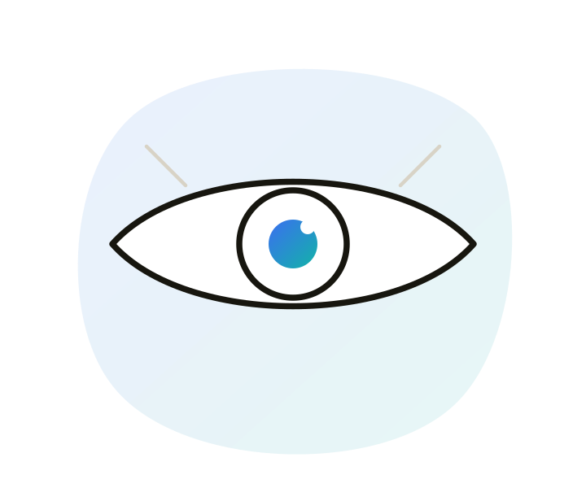
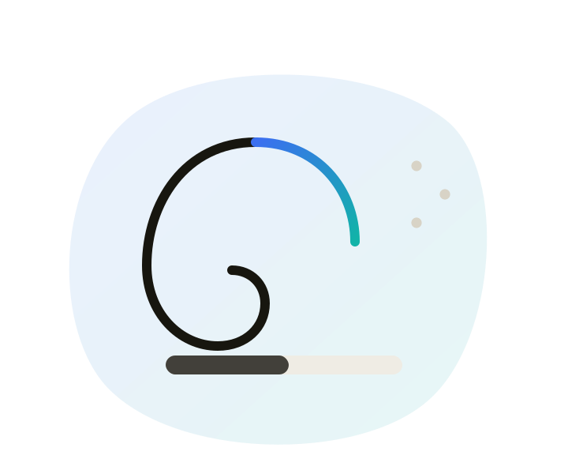
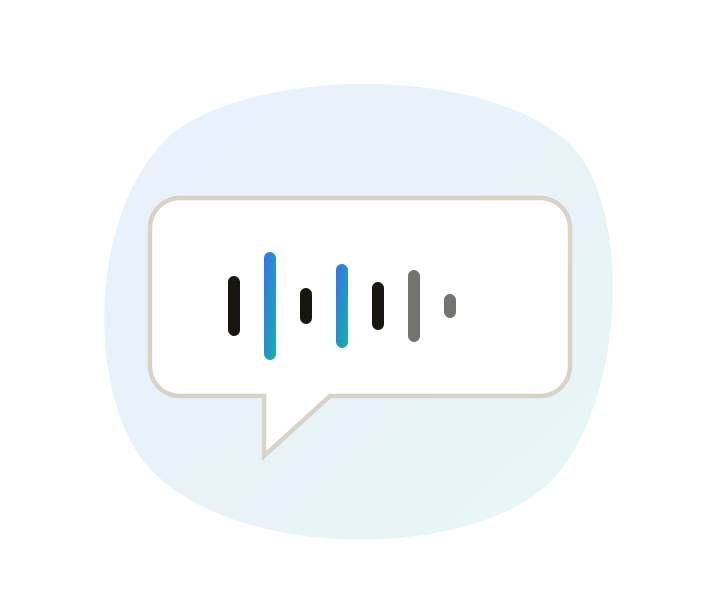
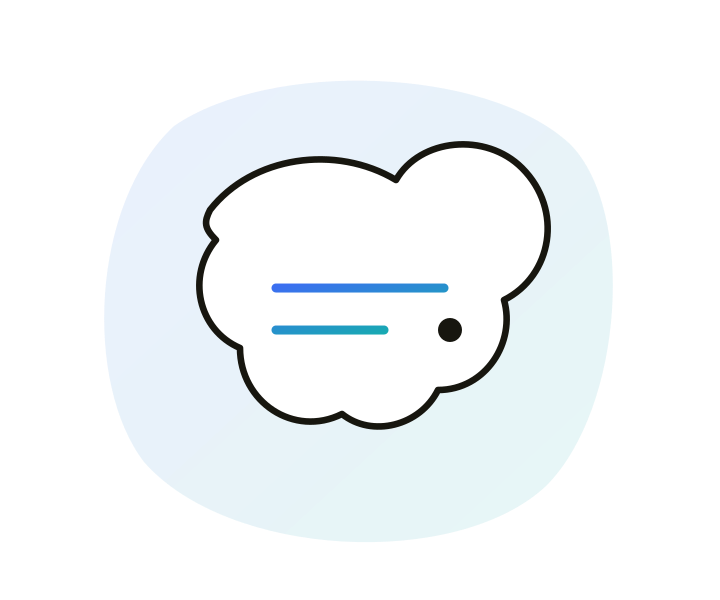
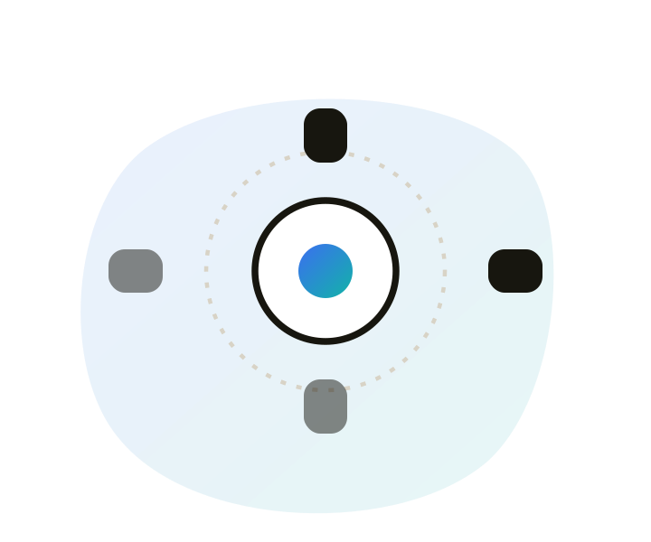

Accessibility fundamentals
What it means, who it affects, and why it's a legal and business issue as much as a design one.

Overview
Accessibility means digital products, websites, apps, tools, are usable by as many people as possible, including people with disabilities. Disabilities come in many forms: they can affect vision, hearing, motor skills, or how someone processes information. In simple terms, accessibility means designing beyond the "average" user, for the full spectrum of human diversity.
Types of disabilities

Visual
Blindness, low vision, colour blindness. May rely on screen readers, magnifiers, or high-contrast settings.

Auditory
Hearing impairments needing captions, transcripts, or visual cues for audio and video.

Speech
Difficulty using voice-controlled features. Alternative input methods matter here.

Cognitive
Dyslexia to memory impairments. Needs clear navigation and simple, predictable language.

Motor
Limited mobility, often relying on keyboard navigation, voice commands, or switches.
Age-related
Affects vision, hearing, mobility and cognition. 442 million people worldwide, a growing group.
Disabilities also aren't always permanent. A temporary disability, like a broken arm, a situational one, like trying to read a screen in bright sunlight, and a permanent one all deserve the same design consideration, because at some point almost everyone experiences at least one of the three.
Common challenges in mobile apps
- Small touch targets: buttons too tiny to tap reliably for anyone with limited dexterity.
- Poor colour contrast: text or icons that blend into the background.
- Inconsistent navigation: layouts that are hard to predict, especially for cognitive impairments.
- No screen reader support: custom components with no label leave screen reader users stranded.
What screen readers are
A screen reader is software that takes what's on a screen and speaks it, or sends it to a braille display. People who are blind or have low vision use them to browse, fill in forms, and complete the same tasks sighted people do by looking. They don't read the pixels. They read a structured version of the page, built from headings, labels, buttons, links, and other named controls.
People who aren't blind use them too: some people with dyslexia or cognitive disabilities, anyone whose screen has failed, anyone whose hands are full. If a product doesn't work with a screen reader, it doesn't work for a large part of the audience accessibility is meant to include.
What it actually announces
For each control, a screen reader typically says three things. If any of them is missing or wrong, the control is hard or impossible to use.
Name
"Submit", "Email address", "Home". If a control has no name, the reader has nothing useful to say.
Role
Button, link, heading, checkbox. So someone knows what they can do with it, not just what it looks like.
State
Checked, expanded, disabled, 2 of 4. So they know where they are and what just changed.
How people actually move through a page
Experienced users don't listen to every word in order. They jump by headings, landmarks, links, and form fields, the way a sighted person scans. If those structures are missing, fake, or out of order, the page becomes a long, undifferentiated stream of text.
- Headings are a table of contents: a skippable outline of the page, not just large text.
- Buttons need to be real buttons, with a name: a clickable div with no label is silent, or announces as "clickable" and nothing else.
- Meaningful images need alt text: decorative ones should be silent, so they don't interrupt the flow.
- Focus order should match the visual order: keyboard and screen reader users follow the same path through the page.
The common ones
- VoiceOver: built into macOS and iOS.
- TalkBack: built into Android.
- NVDA: free, widely used on Windows, especially for testing web.
- JAWS: paid, still common in enterprise and government.
- Narrator: built into Windows.
How to turn them on and what to check is in Accessibility testing. This chapter is the mental model: if name, role, and state aren't there, a screen reader has nothing to work with.
Why it matters
Once you design with accessibility in mind, you're automatically building products that work better for everyone. It isn't just about meeting legal standards or growing your audience, it's a prerequisite for calling yourself a human-centred designer at all.
- Legal compliance: many countries mandate accessibility in digital products. Non-compliance risks lawsuits, fines, and reputational damage.
- Market opportunity: designing for accessibility opens a market of over a billion people otherwise excluded.
- Everyone benefits: accessibility features built for specific needs often become invaluable to everyone. VoiceOver, for instance, exists because someone needed it, and now helps anyone whose screen breaks, or whose hands are full.
- Ethical responsibility: accessible design upholds equity, ensuring no one is excluded from the digital world.
- Innovation & brand value: constraints inspire creative solutions. Companies known for accessibility, like Apple and Microsoft, earn stronger brand reputations.
Laws & standards
Accessibility isn't only a design consideration, in many parts of the world it's a legal requirement.
- ADA (Americans with Disabilities Act): in the US, mandates that public spaces, including digital products, are accessible.
- Section 508: applies specifically to US federal agencies and their electronic and information technology.
- EN 301 549: the European standard for accessibility in public procurement of ICT products and services.
- UK Equality Act 2010: enforces accessibility standards in the UK.
- Apple's Human Interface Guidelines: platform standard emphasising VoiceOver, Dynamic Type, and custom accessibility actions.
- Google's Material Design Accessibility: platform standard focused on contrast, touch target size, and TalkBack support.
The cost of getting it wrong
In 2006, the National Federation of the Blind sued Target Corporation over its website's inaccessibility to screen reader users, alleging missing alt text across the site. The case settled in 2008 for $6 million, alongside a commitment to fix the underlying issues. It remains one of the clearest examples of what ignoring accessibility can cost.